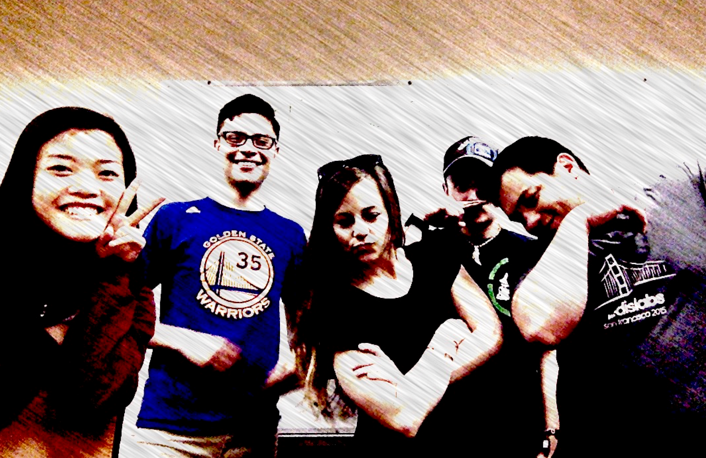

About Tweet Dat(a) Hate

Our project analyzes the percentage of hate tweets, relative to the total tweets per state. Given recent political sentiments, societal changes, and the prevalence of technology, we wanted to see what feelings were reflected on social media.
We believe that Twitter allows people to easily express opinions publicly, and as such, there would be a large amount of data to work with.
Ultimately our goal was to create a full-stack of streaming data from Twitter’s API to process the tweets and store them into a database. We score the tweets based on a sentiment analysis, and reflect these scores on our visualization home page.
Our Team
Eakins E.
MSCS, Second Year.
Marquez J.
BS Junior
Nguyen C.
MSCS, First Year.
Swisher M.
BS Senior
Womack A.
MSCS, Second Year.
